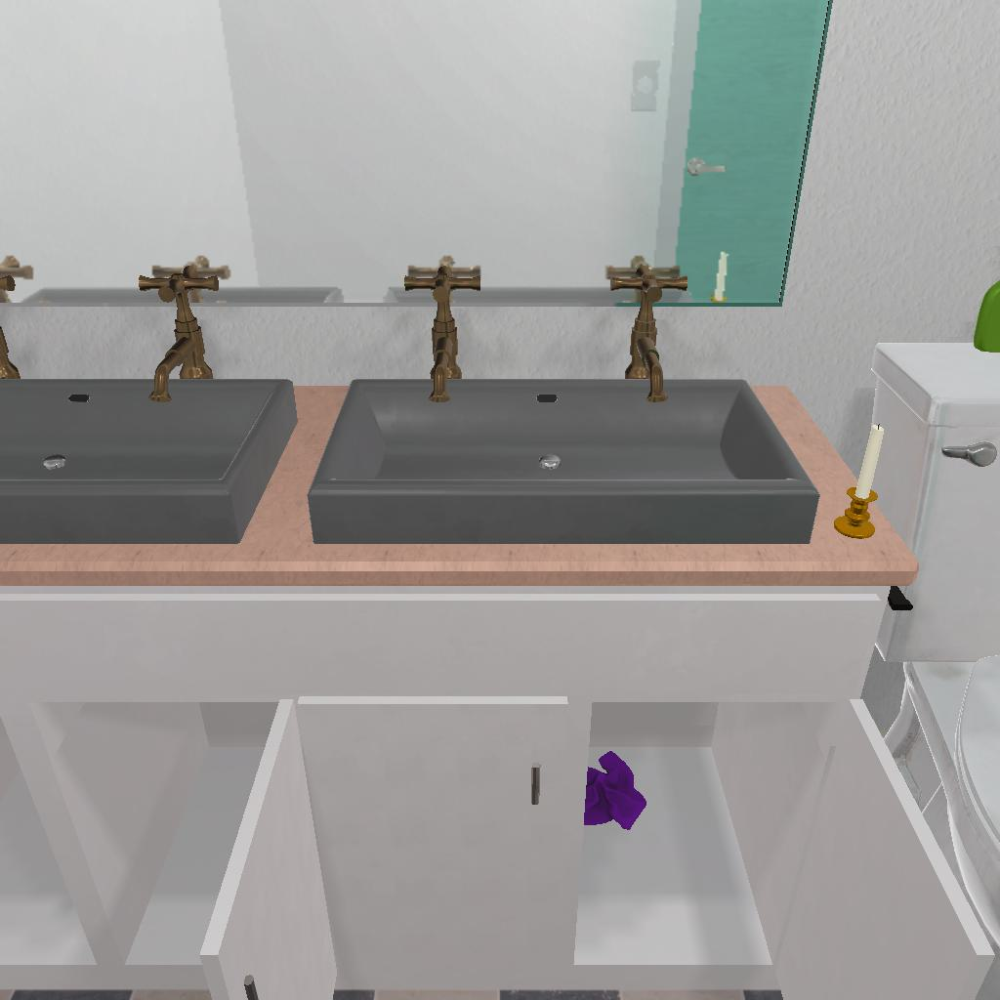

---------------------------------------------------------task: 9---------------------------------------------------------
--------------------------------------------------------------------------------------------------------------------------------------------------------------------
--------------------------------------------------------------------------------------------------------------------------------------------------------------------
Step:--------------------------------------------------------------------------18-------------------------------------------------------------------------------
----------------------------------------
VLM Prompt:
Image1:
Image2:
Image3:
**Instruction**
1. Analyze the provided images to identify all visible household objects and compare the difference between images (e.h. whether the object is opened or not and taken on hand or not), focusing on those relevant to the task description "put some soapbottle on toilet."
2. Use the analysis of images and the task hint "The agent must find an object of the desired type, pick it up, find the correct location to place it, and put it down there." to answer the question: what is the most reasonable action in the choices for the task description "put some soapbottle on toilet"?
3. Decide and write the answer using the template: The answer is: (i): , where i is the real number. If there is no desired object in images, search every place based on **Initial Observation** to find the object. And if no one is exactly correct, choose a similar answer.
**Initial Observation**
You are in the middle of a room. Looking quickly around you, you can see bathtub (1), bathtubbasin (1), toilet (1), cabinet (1-4), sink (1-2), countertop (1), sinkbasin (1-2), toiletpaperhanger (1), towelholder (1), garbagecan (1), handtowelholder (1)
**Answer Choices**
(1): go to bathtub 1
(2): go to bathtubbasin 1
(3): go to toilet 1
(4): go to cabinet 1
(5): go to cabinet 3
(6): go to sink 1
(7): go to sink 2
(8): go to countertop 1
(9): go to cabinet 4
(10): go to sinkbasin 1
(11): go to sinkbasin 2
(12): go to toiletpaperhanger 1
(13): go to towelholder 1
(14): go to garbagecan 1
(15): go to handtowelholder 1
(16): open cabinet 2
(17): close cabinet 2
(18): take faucet 1 from cabinet 2
(19): take faucet 2 from cabinet 2
(20): take cloth 1 from cabinet 2
(21): take candle 1 from cabinet 2
(22): take spraybottle 1 from cabinet 2
(23): examine cabinet 2
**Answer**
Let's think step by step by following the instructions.
----------------------------------------
----------------------------------------
Original Response:
The task is to put some soapbottle on the toilet.
From the initial observation, we know there is a cabinet (1-4), and from the images, we can see that cabinet 2 is open, and there is an object inside that resembles a purple cloth but no soapbottle is visible. There is a possibility that the soapbottle might be inside cabinet 2 since it's a common place to store such items, or it might be on the countertop 1, which is often used to place such items for easy access. Since we do not see the soapbottle in the provided images, we have to search for it.
The most reasonable action from the choices would be to first examine cabinet 2 closely to see if the soapbottle is inside, as it is the opened cabinet and the place we are most likely to find such an object. If it is not there, then the next step would be to search the countertop or the other cabinets.
The answer is: (23): examine cabinet 2
----------------------------------------
----------------------------------------
>>> Refine Original VLM Response and Get Pure Action: examine cabinet 2
----------------------------------------
-----------------------------------------------------------------
Running time: 12.461118221282959 seconds
Total Money: 4.736800000000003
-----------------------------------------------------------------
-----------------------------------------------------------------
Text Observation:On the cabinet 2, you see a faucet 1, a faucet 2, a cloth 1, a candle 1, and a spraybottle 1.
-----------------------------------------------------------------
UNSUCCEED